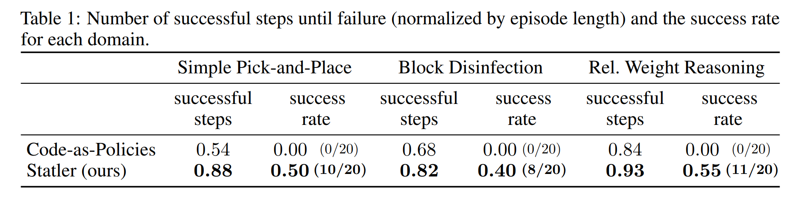
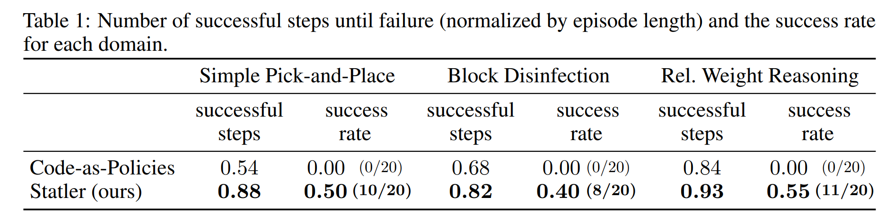

Statler: State-Maintaining Language Modelsfor Embodied Reasoning
Takuma Yoneda*,1, Jiading Fang*,1, Peng Li *,2, Huanyu Zhang *,3, Tianchong Jiang 3, Shengjie Lin 1, Ben Picker 3, David Yunis 1 Hongyuan Mei 1, Matthew R. Walter 1
1TTI-Chicago, 2Fudan University, 3University of Chicago, *Equal Contribution
,PAPER | CODE
Abstract
Large language models (LLMs) provide a promising tool that enable robots to perform complex robot reasoning tasks. However, the limited context window of contemporary LLMs makes reasoning over long time horizons difficult. Embodied tasks such as those that one might expect a household robot to perform typically require that the planner consider information acquired a long time ago (e.g., properties of the many objects that the robot previously encountered in the environment). Attempts to capture the world state using an LLM’s implicit internal representation is complicated by the paucity of task- and environment-relevant information available in a robot’s action history, while methods that rely on the ability to convey information via the prompt to the LLM are subject to its limited context window. In this paper, we propose Statler, a framework that endows LLMs with an explicit representation of the world state as a form of “memory” that is maintained over time. Integral to Statler is its use of two instances of general LLMs—a world-model reader and a world-model writer—that interface with and maintain the world state. By providing access to this world state “memory”, Statler improves the ability of existing LLMs to reason over longer time horizons without the constraint of context length. We evaluate the effectiveness of our approach on three simulated table-top manipulation domains and a real robot domain, and show that it improves the state-of-the-art in LLM-based robot reasoning.
Motivational Example: Three-cups-and-a-ball shell game
 As a demonstration of the challenges to temporal reasoning with LLMs, we consider a three-cups-and-a-ball version of the classic shell game.
In this game, three visually identical cups are placed upside down on a table with a ball hidden under one of the cups. At the start, the player knows
under which of the three cups the ball lies. In each of the subsequent K rounds, the dealer swaps the position of two randomly selected cups.
After the K rounds, the player is asked which of the three cups contains the ball. Because the cups are visually indistinguishable, the player must keep track the
ball’s location as the cups are swapped in order to successfully identify its final location.
As a demonstration of the challenges to temporal reasoning with LLMs, we consider a three-cups-and-a-ball version of the classic shell game.
In this game, three visually identical cups are placed upside down on a table with a ball hidden under one of the cups. At the start, the player knows
under which of the three cups the ball lies. In each of the subsequent K rounds, the dealer swaps the position of two randomly selected cups.
After the K rounds, the player is asked which of the three cups contains the ball. Because the cups are visually indistinguishable, the player must keep track the
ball’s location as the cups are swapped in order to successfully identify its final location.
We simulate this three-cups-and-a-ball game using text as the interface. Prompt 1 presents the setup
of the game. In Line 2, the Boolean value indicates the location of the ball and the subsequent lines
describe the sequence of dealer swaps. After providing the LLM with multiple in-context learning
examples prior to the prompt, the model is then asked to identify the location of the ball by generating
the list highlighted in green after the K swaps.
We evaluate three different approaches that attempt to solve this task: a vanilla LLM, an LLM with
chain-of-thought (CoT) [12], and a state-maintaining LLM, a simplified version of our Statler model.
The vanilla LLM (see Prompt 1) provides only the final location of the ball at the end of the game
given the initial location and sequence of swaps. The LLM with CoT (see Prompt 2) generates the
sequence of ball positions after the final swapping action. This triggers the model to reason over the
state transitions (i.e., changes in the cup positions) that can help to identify the final location of the
ball. The state-maintaining LLM (see Prompt 3) stores and updates a state representation at every
step. In contrast to the other models, the state-maintaining LLM processes each query step-by-step
conditioned on the previous (generated) state representation, and then updates the representation.
We evaluate the accuracy with which these three models predict the location of the ball for different
numbers of dealer swaps. Figure 2 visualizes the average absolute accuracy of each model as well the accuracy relative to
the model’s one-swap accuracy.
Method
For more challenging and arguably more realistic scenarios, such as manipulating objects on a table,
we maintain a separate prompt that includes instructions and demonstrations for each
subtask (state tracking or query responding) and then use the prompt to elicit an LLM to perform
the particular subtask. As we will discuss shortly, our framework includes world-model reader
that responds to the user query and a world-model writer that is responsible for updating the state
representation. Our framework, also shown in Figure 1 does not pose any limitation on what domain
it can be applied to, or how many number of subtasks there are. We note that our approach can
be seen as an extension to Code-as-Policies, where the state-managing mechanism is additionally
embedded without affecting the fundamental capability of Code-as-Policies (i.e., hierarchical code
generation).
Inspired by the concept of modularity, we propose to split the burden across multiple different prompted LLMs.
Precisely, we maintain a separate prompt including instructions and demonstrations for each subtask (state tracking or query responding) and then use it to elicit an LLM to perform the particular subtask.
As we will discuss shortly, our framework has a world-model reader to respond to the user query and a world-model writer to update the state representation.
Our framework is general and can in principle handle an arbitrary number of subtasks.

Compare with Vanilla LLM (code-as-policies)
Results
The simulated domains we consider include (a) pick-and-place; (b) block disinfection, where the translucent sphere around a block represents its dirtiness (this is not visible to the robot); and (c) relative weight reasoning, where the radius of the disk under each block provides an indication of its weight. These disks are rendered there only for visual aids.
We observe that our state-maintaining LLM outperforms the vanilla LLM in all three domains in terms of (normalized) successful steps and success rate.


Real Robot Experiments
In order to validate our method on a real robot, we implement it on a UR5 arm in a similar
tabletop domain as the simulated experiments. Because ground-truth position of objects is not
available, unlike in simulation, we use MDETR, an open-vocabulary segmentation model, to obtain
segmentation masks for objects from an RGB camera on the gripper. The following is a demo for the
sequence ``Put the black cup on the yellow block. Put the yellow block on the Rubik's cube.'' In
order to accomplish this successfully, the robot must remove the black cup from the yellow block
to place the block on the Rubik's cube, but the vanilla approach fails. Notice in particular that
the yellow block stays covered. Frames are arranged temporally from left to right, with intermediate
ones taken as the robot places an object.

BibTex
@misc{yoneda_icra24statler,
title={Statler: State-Maintaining Language Models for Embodied Reasoning},
author={Takuma Yoneda and Jiading Fang and Peng Li and Huanyu Zhang and
Tianchong Jiang and Shengjie Lin and Ben Picker and David Yunis and Hongyuan Mei and Matthew R. Walter},
booktitle={2024 International Conference on Robotics and Automation (ICRA)},
year={2024},
organization={IEEE}
}
Acknowledgements
We thank Luzhe Sun for his help with prompt writing at an early stage, and Richard Xu for helping to
set up the simulator.
For more challenging and arguably more realistic scenarios, such as manipulating objects on a table,
we maintain a separate prompt that includes instructions and demonstrations for each
subtask (state tracking or query responding) and then use the prompt to elicit an LLM to perform
the particular subtask. As we will discuss shortly, our framework includes world-model reader
that responds to the user query and a world-model writer that is responsible for updating the state
representation. Our framework, also shown in Figure 1 does not pose any limitation on what domain
it can be applied to, or how many number of subtasks there are. We note that our approach can
be seen as an extension to Code-as-Policies, where the state-managing mechanism is additionally
embedded without affecting the fundamental capability of Code-as-Policies (i.e., hierarchical code
generation).
Inspired by the concept of modularity, we propose to split the burden across multiple different prompted LLMs.
Precisely, we maintain a separate prompt including instructions and demonstrations for each subtask (state tracking or query responding) and then use it to elicit an LLM to perform the particular subtask.
As we will discuss shortly, our framework has a world-model reader to respond to the user query and a world-model writer to update the state representation.
Our framework is general and can in principle handle an arbitrary number of subtasks.
The simulated domains we consider include (a) pick-and-place; (b) block disinfection, where the translucent sphere around a block represents its dirtiness (this is not visible to the robot); and (c) relative weight reasoning, where the radius of the disk under each block provides an indication of its weight. These disks are rendered there only for visual aids.
We observe that our state-maintaining LLM outperforms the vanilla LLM in all three domains in terms of (normalized) successful steps and success rate.

In order to validate our method on a real robot, we implement it on a UR5 arm in a similar
tabletop domain as the simulated experiments. Because ground-truth position of objects is not
available, unlike in simulation, we use MDETR, an open-vocabulary segmentation model, to obtain
segmentation masks for objects from an RGB camera on the gripper. The following is a demo for the
sequence ``Put the black cup on the yellow block. Put the yellow block on the Rubik's cube.'' In
order to accomplish this successfully, the robot must remove the black cup from the yellow block
to place the block on the Rubik's cube, but the vanilla approach fails. Notice in particular that
the yellow block stays covered. Frames are arranged temporally from left to right, with intermediate
ones taken as the robot places an object.
We thank Luzhe Sun for his help with prompt writing at an early stage, and Richard Xu for helping to set up the simulator.